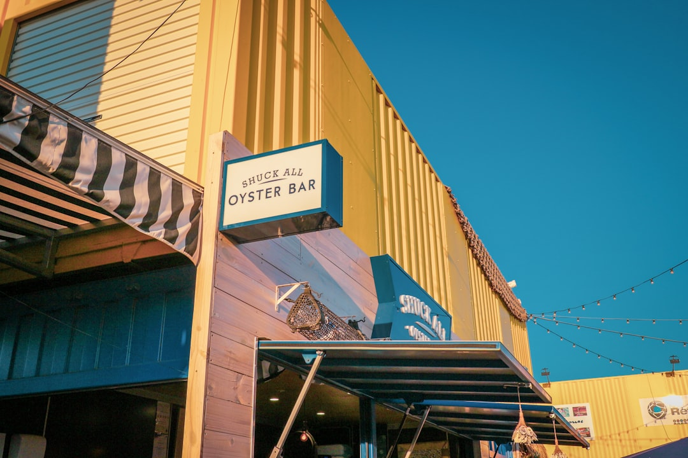

Brisbane roller door repairs usually come down to springs, cables, rollers, tracks or opener faults. A sensor reset or simple opener adjustment is often a low-hundreds job, spring or cable work usually costs more than that, and storm-damaged panel work is a separate quote because the door has to be matched and rebalanced. A broken spring makes the door unsafe to keep operating, and opener wiring work legally needs a licensed electrician under the Electrical Safety Act 2002.
For Brisbane homeowners comparing roller door repairs brisbane options after a spring failure or a door stuck off its track, the practical question is how to tell the fault from the symptoms before anyone starts pulling parts apart. See Garage Door Repairs in Brisbane for the current service details.
Roller Door Repairs Brisbane Explained
Before booking a roller door assessment in Brisbane, it helps to separate the fault types the specialist network at Garage Door Repairs in Brisbane groups calls into: spring failure, opener faults, roller mechanisms coming off track, cable and roller wear, panel damage, and full lockouts needing an emergency response.
Brisbane humidity, UV and bayside salt can shorten the life of guide inserts, bottom seals and exposed fasteners, so a fault should be named by symptom rather than by guesswork.
- Heavy door that lifts unevenly: spring fatigue or break.
- Scraping or crooked travel: off-track curtain or worn guide inserts.
- Motor runs but the curtain barely moves: opener or drive fault.
What repairs tend to cost
A sensor reset or simple opener adjustment is often a low-hundreds job. Spring or cable work usually costs more than that. Storm-damaged panel work is usually quoted separately because the door has to be matched and rebalanced. The figure still depends on the door type, the fault and access at the property, which is why a written, fixed-price quote from the technician, not an online estimate, is the only number worth acting on.
- Minor adjustment or opener fix: usually low hundreds
- Spring or cable repair: usually above the low-hundreds tier
- Panel or section replacement after storm damage: separate quote
Springs, cables and off-track doors
A door that has jumped its track, or a frayed or snapped lifting cable, produces a similar drag-and-stop symptom to a spring fault even though the underlying cause is different, so naming the exact symptom, heavy, off-track, silent or reversing, gives a technician a head start. If the door is heavy but still balanced when lifted by hand, the spring is the first thing to suspect. If the curtain scrapes or catches on one side, the guides or track usually need attention.
- Broken torsion or extension spring, needing replacement and re-balancing
- Frayed or snapped lifting cable
- Worn rollers or a bent track, sending the door off-track
- Storm or impact damage to a panel or section
None of these are safe to force with the opener. Continuing to run a door against a broken spring or bent track can strain the motor further, or let the door drop unexpectedly.
Openers, wiring and the licensed electrician rule
Opener problems show up as a straining motor, dead remotes, limit-switch faults or worn drive components, a different repair path to a mechanical door fault. Because Queensland law treats mains-voltage wiring differently to mechanical repair, any hard-wired connection or new power point for a powered opener must be carried out by a licensed electrician under the Electrical Safety Act 2002. Mechanical work on the door itself, including springs, cables and tracks, does not require an electrician, so a job touching both sides is coordinated across the two trades rather than handled by one generalist. Openers commonly serviced include B&D, Steel-Line, Merlin and ATA, across sectional, roller and tilt door types.
Why the job varies more by door type than by suburb
What changes the fault, the cost and the timing is mostly the door type and its age, sectional, roller or tilt, and the opener brand fitted, not which side of Brisbane the property sits on. A roller door's faults centre on its roller and track system, while a sectional door's hinged panels fail differently again, so the useful question to ask when booking is the door type and opener brand, not the suburb name.
Coverage still runs across the northside, inner-west, south and bayside, so a Brisbane-wide network can send a technician who already knows the common opener brands in use locally. That matters most after storms, when salt air and water can turn a small guide issue into a bigger repair if the door keeps being forced.
When it's an emergency, and what a fixed-price quote should cover
A door that will not open or close at all, or that has come off the track entirely, is the priority call, since a garage that cannot be secured is both a safety and a security issue. A door that reverses or will not close, by contrast, is often a photo-eye sensor problem near the base of the tracks, misaligned, dirty or obstructed, worth checking before booking anyone. If the motor runs but the curtain does not move, that points more to a drive or spring issue than to a sensor fault.
Before work starts, ask for the fault named specifically, spring, cable, roller, track or opener component, and a written, fixed-price figure rather than an hourly estimate, since access and parts change the job.
- Stop and look. Note whether the door is heavy, off-track, silent, or reversing, since each points to a different fault.
- Check the sensor path. If the door reverses or will not close, check the photo-eye sensors near the base of the tracks are clean and unobstructed.
- Avoid forcing the door. Do not keep operating the opener against a broken spring, bent track or jammed roller, as this can worsen the fault.
- Note the door type and opener brand. Have the door type and opener brand, such as B&D, Steel-Line, Merlin or ATA, on hand when you call.
- Ask for a written fixed quote. Get the fault confirmed and a fixed price before any work begins, and confirm whether electrical work is involved.
| Symptom | Likely cause | Cost signal |
|---|---|---|
| Door will not lift or feels very heavy | Broken or worn spring | Above a minor adjustment, costs more |
| Door drags, binds or stops partway | Off-track roller or frayed cable | Above a minor adjustment, costs more |
| Opener runs but door will not move | Worn drive component or limit-switch fault | Often a minor fix, low hundreds |
| Door will not close or reverses | Photo-eye sensor or opener settings | Often a minor fix, low hundreds |
| Door will not open or close at all | Full lockout or emergency fault | Depends on cause, get a written quote |
Common questions
How much does roller door repair cost in Brisbane? Minor adjustments and opener fixes often sit in the low hundreds of dollars, while spring, cable or motor replacement costs more. The exact figure depends on the fault and access, so a written, fixed-price quote before work starts is the only firm number.
Can I keep using a roller door with a broken spring? No. The spring carries most of the door's weight, so a broken spring leaves the door heavy and unbalanced, and forcing it with the opener can strain the motor or drop the door.
Does a roller door opener repair need an electrician? Only if it involves mains-voltage wiring or a new power point. Under Queensland's Electrical Safety Act 2002 that work must be done by a licensed electrician, while mechanical repairs to the door do not require one.
Why does my roller door reverse instead of closing? This is usually a safety-sensor issue, the photo-eyes near the base of the tracks may be misaligned, dirty or blocked; worn rollers or opener settings can also cause it, and a persistent fault needs a technician to check.
Does the suburb affect the repair, or the door itself? The door type, age and opener brand drive the fault and cost far more than the suburb. Coverage spans Brisbane's northside, inner-west, south and bayside regardless of door type.
This guide covers roller door faults, indicative cost signals and licensed-electrician rules for Brisbane homeowners, not a quote or booking service.